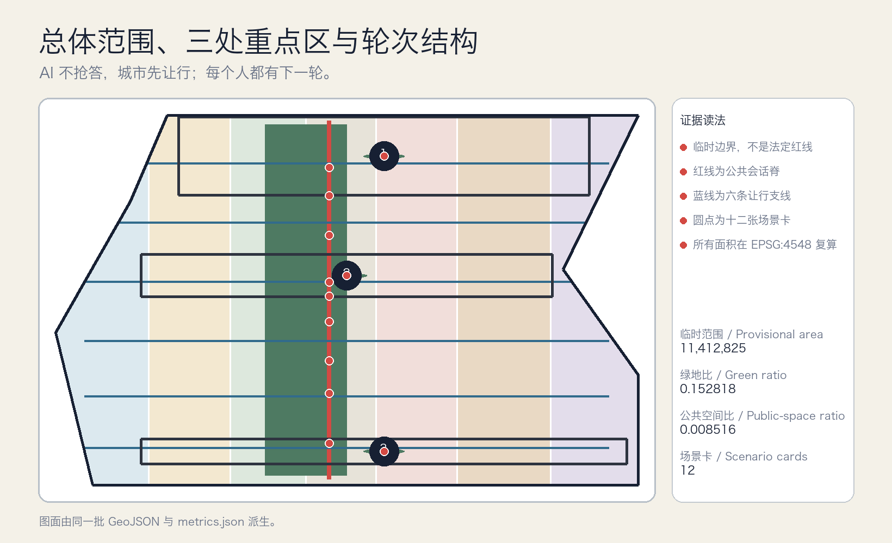
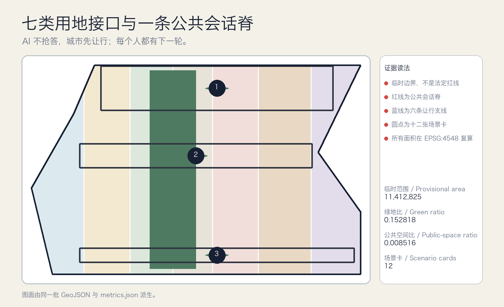
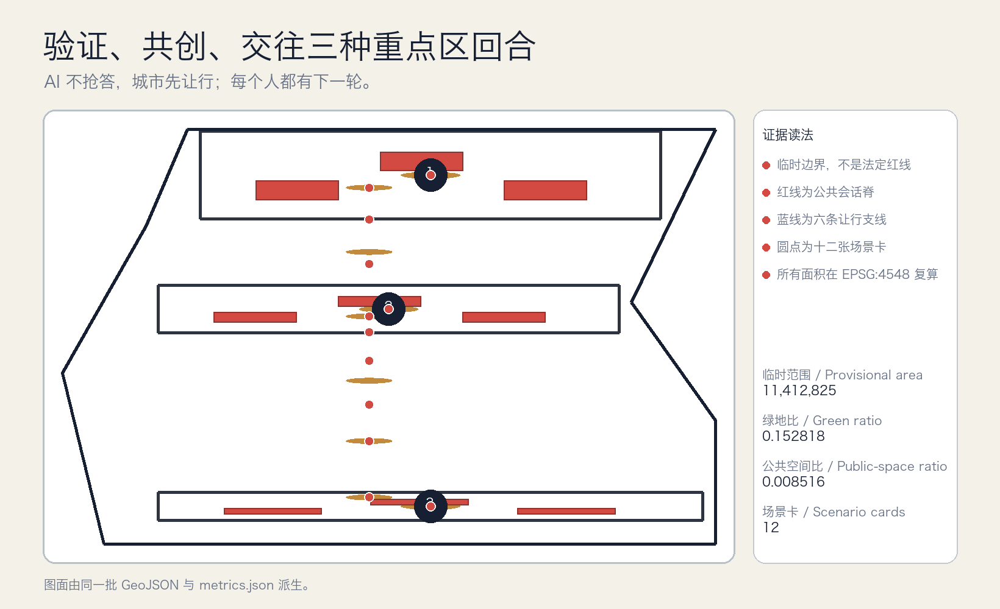
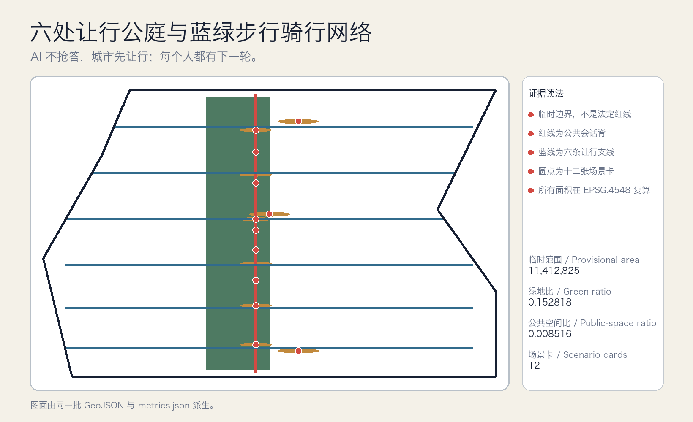
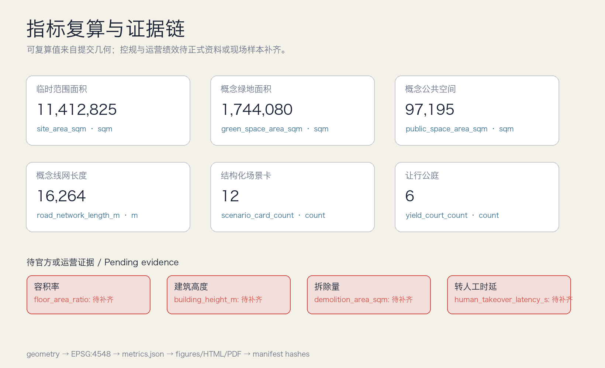

总览地图

一脊、三回合、两翼、六让点、十二轮次。所有数字与图件由同一组机器可读文件派生。





人机让行路口、共享路缘轮次、多模态公共服务回合台、慢行断点共测、社区健康导航、教育与学习助手、法律与知识产权材料助手、城市维护工单对话、活动与普通通勤共地、国际 AI 圆桌、京张百年口述站、城市暂停一秒演练
前三张为产业测试验证场景；所有高影响场景保留现场停止权、人工接管、退出与复盘。
公共会话脊导视；六处让行公庭；众智园验证场；原点社区回合台；大钟寺路缘时刻表；多模态公共服务测试；三处朝圣地标；公开场景账本；年度轮到你大会
近期、中期、长期分期均以正式边界、控规、权属、交通、市政、消防和文保资料为进入条件。
触发议题 → 公开规则 → 受控测试 → 现场停止/转人工 → 投诉与退出 → 复盘后决定下一轮
来源：sources.json（含发布者、访问日期、用途、转换与限制）；假设：assumptions.json（边界、控规、建筑、交通、运营与案例限制）。
公告任务和 agent.1-agent.6 由 compliance_matrix.json 对应到正文、图层、指标、图纸和网页；deterministic、spatial、visual、professional 四类检查必须同时通过。
来源见 sources.json；假设见 assumptions.json。网页无远程脚本、地图瓦片、字体、API、表单或追踪器。
临时边界仅用于概念比较和内部一致性校验，不是法定红线。
九个工作包按近期、中期、长期推进；高影响 AI 保留现场停止权、人工接管、退出和复盘。